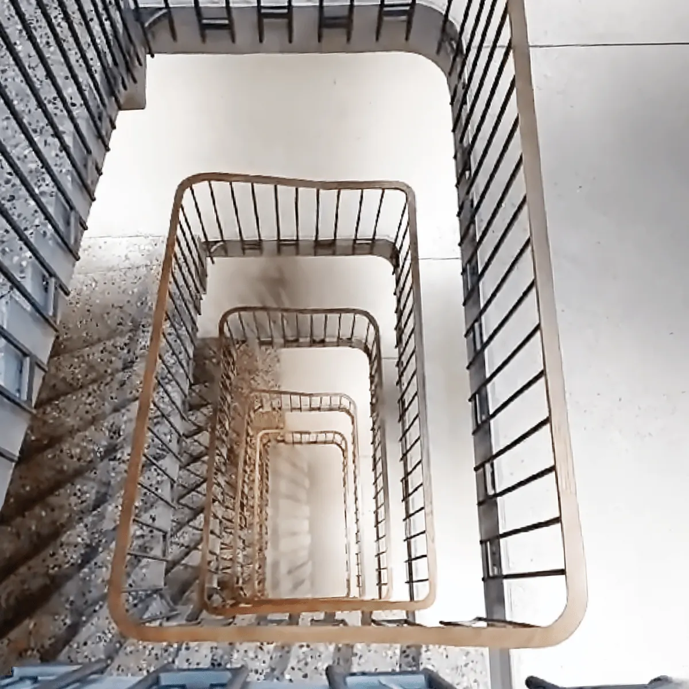
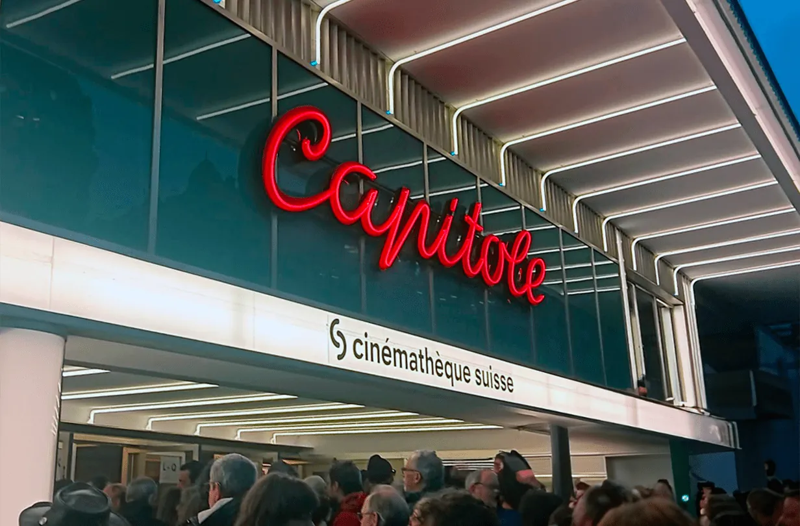
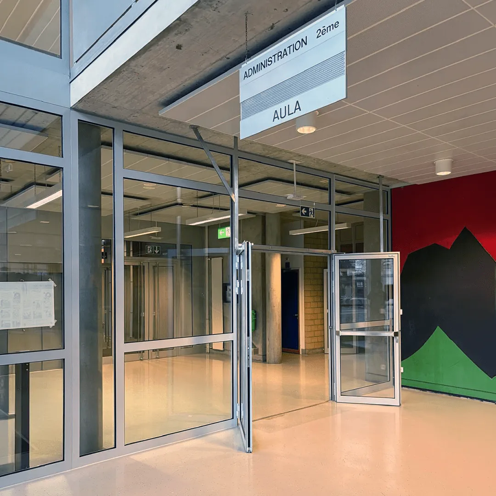
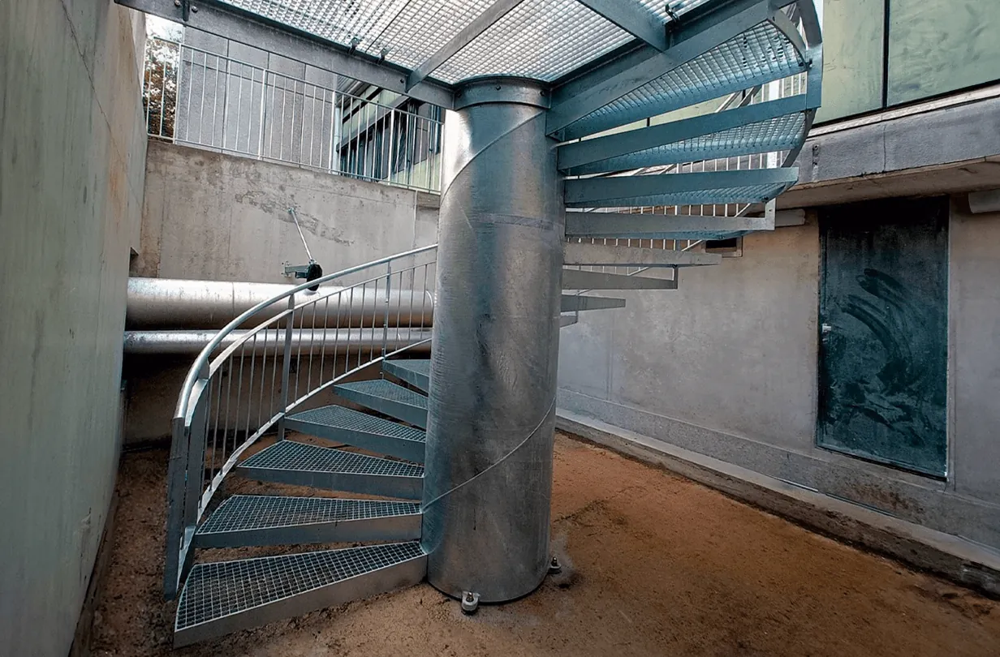
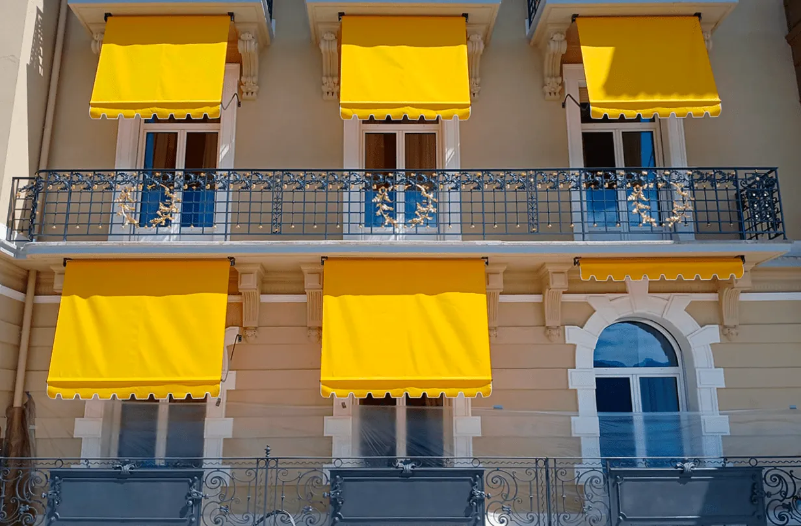
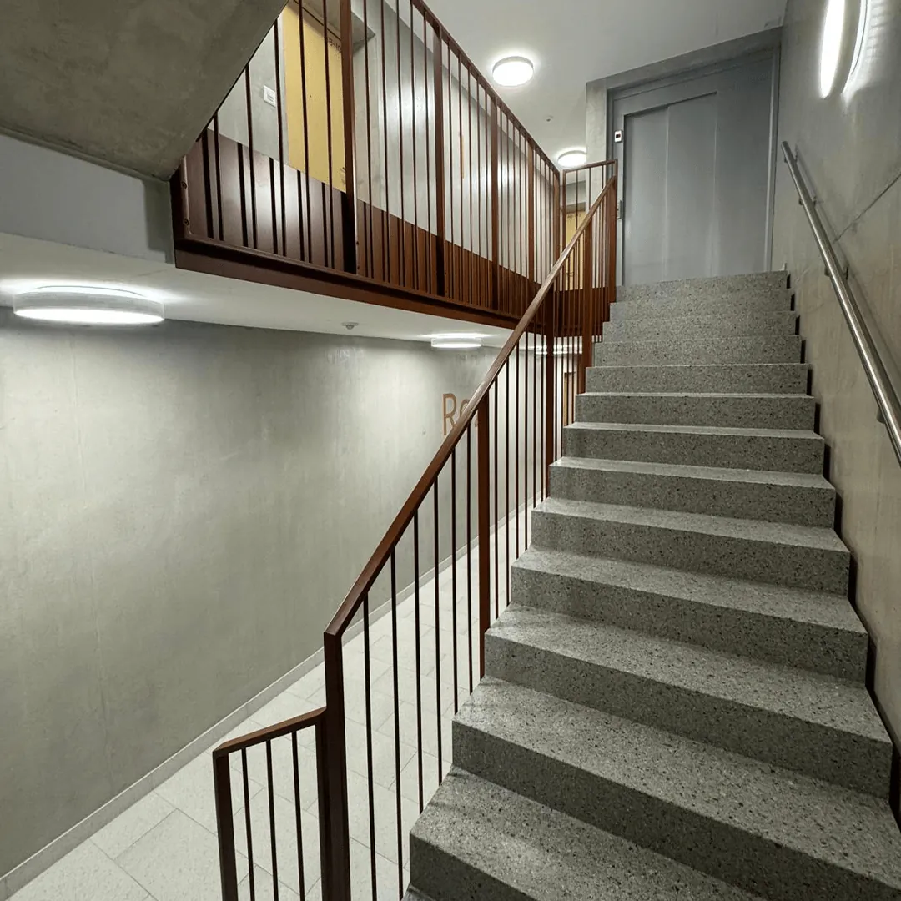
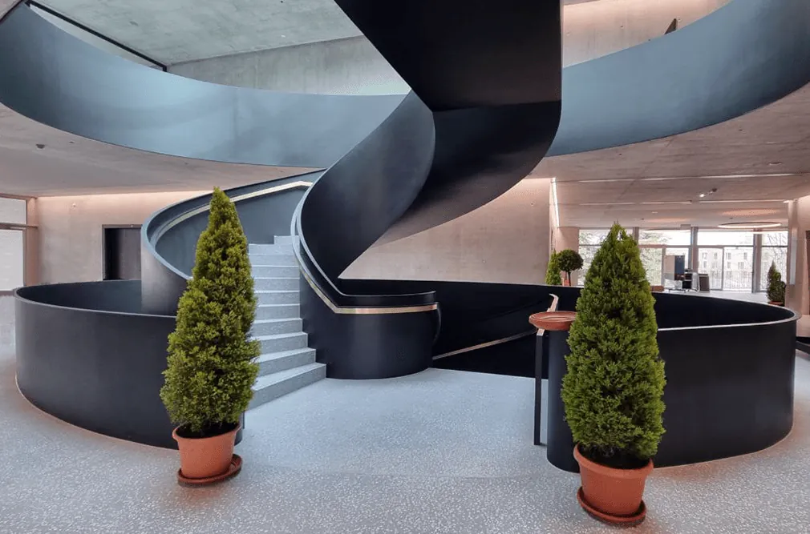
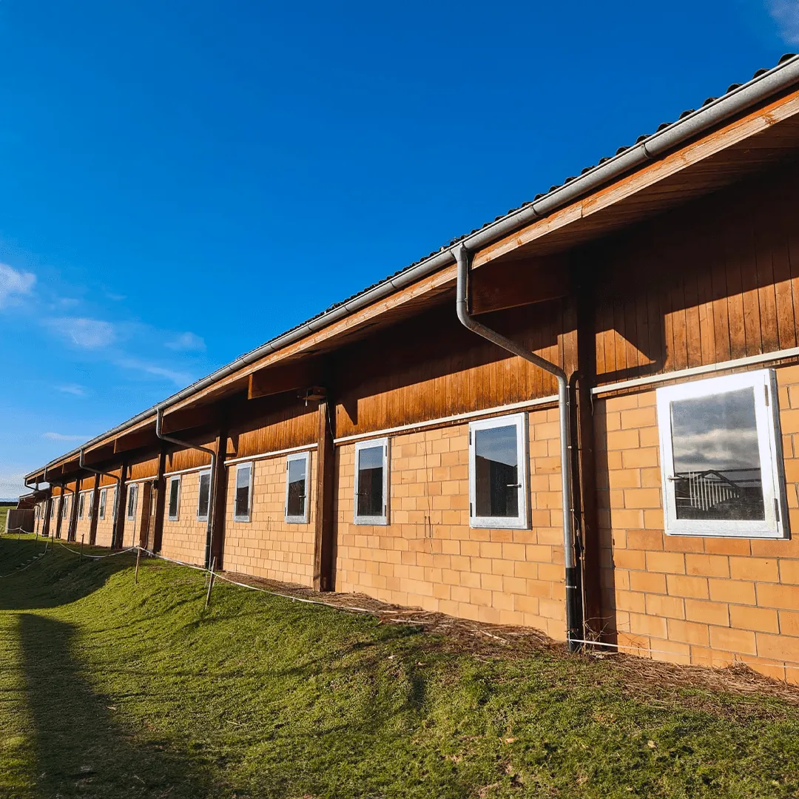
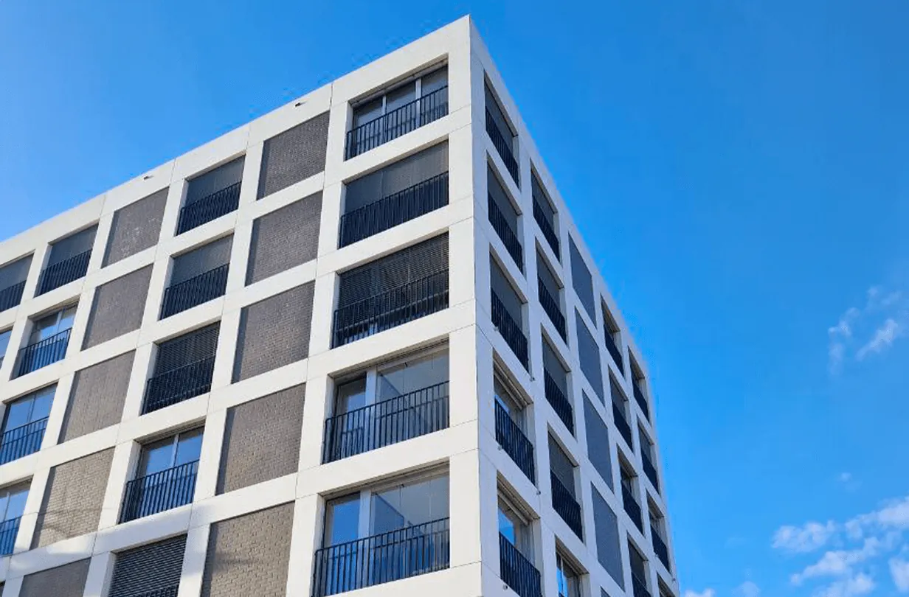
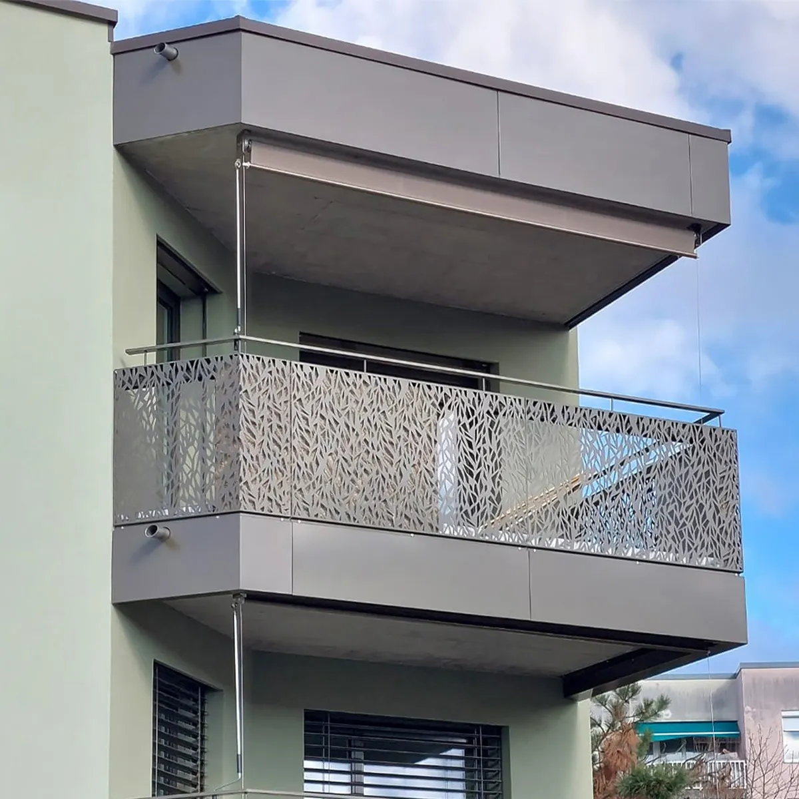

Escaliers, façades, garde-corps. En acier, inox et aluminium.
Constructions métalliques depuis 1922. Entreprise familiale, au Mont-sur-Lausanne et à Bulle.

Ce que l’atelier fabrique.
Héritiers d’un savoir-faire authentique, nous réalisons vos ouvrages en acier, en inox ou en aluminium. Tout projet est unique pour nous, et notre premier objectif est votre satisfaction.
- Portes
- Escaliers
- Barrières
- Vitrages
- Façades
- Charpentes
- Tôlerie
- Atelier acier
- Atelier aluminium
- Atelier inox
- Tôlerie
- Traitement
- Montage
- Levage
- Bureau technique
Huit secteurs d’activité réunis dans la même entreprise, pour mener un projet de l’étude à la pose. Environ 105 collaborateurs.
Réalisations.









Aussi : Aéroport international de Genève, Campus Pictet de Rochemont (Genève), Centre des Congrès et d’Exposition de Montreux, STEP de Vidy (Lausanne), Collège de Vernerey (Chavornay), Collège des Parcs (Neuchâtel), Collège de Chanel (Morges), BCU Fribourg, TPG En Chardon (Vernier), Port-Gitana (Bellevue), IEPA FREMIS (Puplinge), EPFL.
Les machines de l’atelier.
Ces outils, et d’autres de dernière génération, complètent les compétences de nos professionnels pour un suivi rigoureux de chaque projet.
Presse plieuse à tôle
Plus de 220 tonnes de force de pression, jusqu’à 4 m de long, pour les pliages les plus délicats. Conforme aux standards de sécurité européens CE.
Cisaille pendulaire
Découpe des tôles d’acier et d’inox en réduisant l’angle de coupe, pour éviter la distorsion de la tôle. Format limité à 4 m.
Découpe hydro-abrasive au jet d’eau
Une découpe de très haute précision, qui réduit les coûts et les délais.
Quatre générations.
- 1922
Ernest Joux, serrurier-forgeron-charron, fonde son entreprise à Prilly. Un petit atelier de cinq employés.
- 1957
Ses deux fils, Marcel et Ernest junior, reprennent l’affaire, qui grandit jusqu’à vingt employés.
- 1976
Daniel Joux rejoint son père Marcel. L’aluminium et l’inox s’ajoutent à l’acier.
- 1994
Daniel et ses deux enfants, Sandrine et Frédéric Joux, reprennent la société sous le nom JOUX S.A.
- 2012
Pour les 90 ans de l’entreprise, toute l’équipe s’installe dans la nouvelle halle du Mont-sur-Lausanne, zone industrielle En Budron.
Engagements.
Employés
Un environnement de travail sain et sûr, à la hauteur des attentes des collaborateurs.
Formation
Chaque année, des places d’apprentissage, en étroite collaboration avec le canton de Vaud.
Qualité
Appliquer chaque jour les meilleures pratiques nationales et internationales du métier.
Environnement
Atténuer notre impact, dans les processus, les orientations stratégiques et les décisions quotidiennes.
Certificats ISO 9001 (qualité) et ISO 45001 (santé et sécurité au travail) délivrés par Procert.
Un projet ?
Racontez-nous ce que vous voulez construire. Nos spécialistes sont à votre écoute.
Lundi – jeudi : 7 h – 12 h, 13 h – 16 h 45
Vendredi : 7 h – 12 h, 13 h – 15 h 45
Emplois. Aucun poste n’est ouvert pour le moment, mais de nouvelles opportunités peuvent s’ouvrir à tout moment.